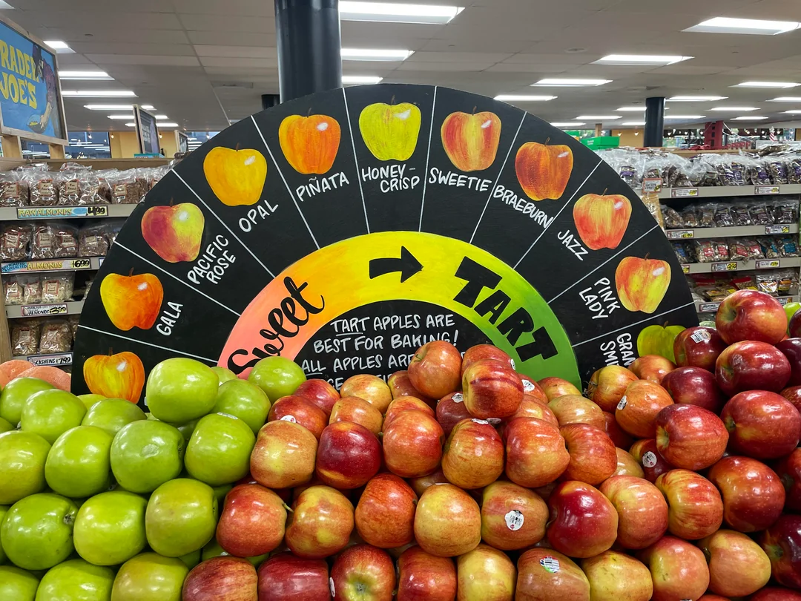
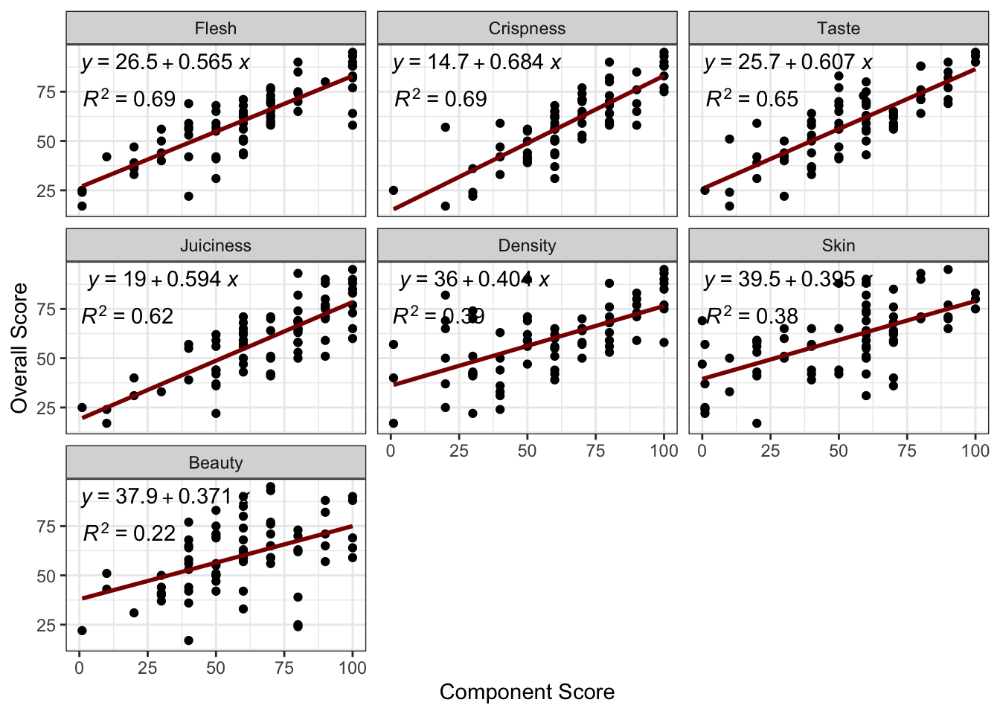

STA 9750 Lecture #10 In-Class Activity: Strings and String-y Things
Class #12: Thursday April 30, 2026 (Lecture #10: Strings, Regular Expressions, and Text Processing)
Slides
Review and Warm-Up
Apples are an essential part of the human experience, known for their ability to ward off medical professionals, to curry favor with educators, and to lead to one being forcibly evicted from pleasant gardens. Accordingly, humanity has spent many years developing a spectrum of apples, ranging from the cloyingly sweet to the bracingly tart.

This cornucopia challenges the average consumer, who often struggles to find the best apple on any given day. Thankfully, Brian Frange of applerankings.com is on the task. For this warm-up exercise, we are going to extract his rankings of apples into a four-column table of the following format:
| Type | Description | Score | summary |
|---|---|---|---|
| SweeTango Apples | “The Holy Grail” | 95 | Nearly Perfect |
| Lucy Glo Apples | “The Breathtaking Circus Freak” | 93 | Superb |
| Pink Lady Apples | “The Cover Girl” | 90 | Superb |
-
Create the table shown above using
rvest. The first two columns -TypeandDescription- are fairly straightforward, requiring only a simple selector using standard elements (headers and anchors) and the use ofhtml_elements(); the latter two are more complex and you will want to useSelectorGadgetor similar to get the desired outcome.Hint: Make sure that you are getting the same number of results for all four columns before building your table. If you are getting twice as many results in one column, your selector needs to be more precise.
Hint:
SelectorGadgetcan be a bit picky about the order in which you have to select elements to get the desired answer. If you hit a dead end, clear and try again in a different order.
TipSolution
library(tidyverse)
library(rvest)
APPLES_HTML <- read_html("https://applerankings.com/pick-an-apple/")
type <- APPLES_HTML |> html_elements("h2") |> html_text2()
description <- APPLES_HTML |> html_elements("h4 a") |> html_text2()
score <- APPLES_HTML |> html_elements(".elementor-widget-heading:nth-child(1) div.elementor-size-default") |> html_text2() |> as.integer()
summary <- APPLES_HTML |> html_elements(".elementor-widget-heading:nth-child(2) div.elementor-size-default") |> html_text2()
APPLES <- tibble(type, description, score, summary)
head(APPLES)# A tibble: 6 × 4
type description score summary
<chr> <chr> <int> <chr>
1 SweeTango Apples "\"The Holy Grail\"" 95 Nearly Perfect
2 Lucy Glo Apples "\"The Breathtaking Circus Freak\"" 93 Superb
3 Pink Lady Apples "\"The Cover Girl\"" 90 Superb
4 Ludacrisp Apples "\"The Dirty South Rapple\"" 90 Superb
5 SugarBee Apples "\"The Future Queen\"" 88 Excellent
6 Cosmic Crisp Apples "\"The Hype Machine\"" 88 Excellent With a bit of gt() formatting, we can also mimic the formatting of the original website:
library(gt)
APPLES |>
gt(id="apples_table_small",
groupname_col = "summary") |>
tab_style(style=list(cell_fill("#4E79A7"),
cell_text(color="white",
weight="bold",
align="center")),
locations=cells_row_groups()) |>
cols_label(description="Description",
score="Score",
type="Type") |>
data_color(columns=score,
target_columns=everything(),
direction="column",
palette = c("#8B4513", "#FF0000", "#FFBF00", "#008000"),
domain = c(0, 100))| Type | Description | Score |
|---|---|---|
| Nearly Perfect | ||
| SweeTango Apples | "The Holy Grail" | 95 |
| Superb | ||
| Lucy Glo Apples | "The Breathtaking Circus Freak" | 93 |
| Pink Lady Apples | "The Cover Girl" | 90 |
| Ludacrisp Apples | "The Dirty South Rapple" | 90 |
| Excellent | ||
| SugarBee Apples | "The Future Queen" | 88 |
| Cosmic Crisp Apples | "The Hype Machine" | 88 |
| Kanzi Apples | "The European Party Apple" | 85 |
| Honeycrisp Apples | "The Queen Mother" | 83 |
| Envy Apples | "The Guilty Pleasure" | 82 |
| Wild Twist Apples | "A Famous Person's Child" | 80 |
| Very Good | ||
| Opal Apples | "A Juicy Ass" | 77 |
| SnapDragon Apples | "The Paper Dragon" | 77 |
| Kissabel Rouge Apples | "La Pomme de Triomphe" | 76 |
| Rave Apples | "The Knockoff Brand Honeycrisp" | 75 |
| Pretty Good | ||
| GoldRush Apples | "A Goldmine of Flavor" | 74 |
| Aura Apples | "The Reiki Apple" | 73 |
| Braeburn Apples | "The Civil Rights Apple" | 71 |
| King David Apples | "The Tart of Arkansas" | 71 |
| Pink Pearl Apples | "The Red Scare" | 71 |
| Ambrosia Apples | "The Chosen Apple" | 70 |
| EverCrisp Apples | "The Jawbreaker" | 70 |
| Mediocre | ||
| Jazz Apples | "A Disharmony of Flavor Notes" | 69 |
| Ruby Frost Apples | "Thick-Skinned New York Fuckboi" | 69 |
| Gala Apples | "The Base Model" | 68 |
| Candy Crisp Apples | "A Pear-Cucked Red Delicious" | 68 |
| Jonathan Apples | "A Promising Young Man" | 65 |
| Empire Apples | "A Spunky Optimist" | 65 |
| WineCrisp Apples | "A Bottom-Shelf Vintage" | 65 |
| Juici Apples | "A Pandering Litigious Gigolo" | 65 |
| Barely Worth It | ||
| Lucy Rose Apples | "The Shallow Person's Regret" | 64 |
| Sundowner (Cripps Red) Apples | "Pink Lady's Ugly Brother" | 64 |
| Macoun Apples | "The Cinderella Apple" | 63 |
| Lemonade Apples | "The Not Quite Lemonade Apple" | 63 |
| SnowSweet Apples | "A Returnable Christmas Present" | 62 |
| Blondee Apples | "The Mutant Gala" | 62 |
| Pazazz Apples | "The Desperate Musical Theater Major" | 60 |
| Ruby Jon Apples | "A Spirited Himbo" | 59 |
| Sunrise Magic Apples | "The Orphan Apple" | 59 |
| Green Dragon Apples | "A Disenchanting Legend" | 59 |
| Rockit Apples | "Bite-Sized Space Junk" | 59 |
| Hunnyz Apples | "The Worst Named Apple" | 58 |
| Top Secret Apples | "A Dead-End Conspiracy Theory" | 58 |
| Granny Smith Apples | "The Original Sour Apple" | 57 |
| Jonagold Apples | "A Forgettable College Friend" | 57 |
| Golden Delicious Apples | "The West Virginia Has-Been" | 56 |
| Fuji Apples | "The Japanese Pop Star" | 56 |
| Lady Alice Apples | "A Perfectly Nice Lady" | 56 |
| Koru (Plumac) Apples | "The Middle of the Pack" | 55 |
| Unworthy | ||
| Zestar! Apples | "The Failed Magician" | 53 |
| Autumn Glory Apples | "The Glory Hole" | 51 |
| Sweetie Apples | "A Watery Grave" | 51 |
| Mutsu (Crispin) Apples | "The Inedible Hulk" | 50 |
| Cameo Apples | "An Unwelcome Guest" | 50 |
| Pinova (Piñata) Apples | "A Papier Mache Fruit Husk" | 50 |
| Horse Food | ||
| McIntosh Apples | "A Seal-Skinned Canadian Letdown" | 47 |
| Cortland Apples | "An Ivy League Nepo Baby" | 44 |
| Modi Apples | "The Italian Disgrace" | 44 |
| Melrose Apples | "The All-American Apple" | 43 |
| Cripps Pink Apples | "The Understudy for the Pink Lady" | 42 |
| Smitten Apples | "The Curb Stomp of Apples" | 42 |
| Kiku Apples | "A Fuji In Disguise" | 42 |
| Stayman Winesap Apples | "A Civil War Era Mistake" | 41 |
| Wolf River Apples | "The Midwestern Sledgehammer" | 40 |
| MiApple Apples | "The Narc of Apples" | 39 |
| Newtown Pippin Apples | "Long Island's Sand-Filled Condom" | 37 |
| Silken Apples | "The Canadian Charity Case" | 36 |
| Sweet Orin Apples | "The Imposter Apple" | 33 |
| Crimson Gold Apples | "A Crabapple in Disguise" | 31 |
| Despicable | ||
| Red Delicious Apples | "Coffee Grinds in a Leather Glove" | 25 |
| Rome Apples | "The False Caesar" | 24 |
| Golden Russet Apples | "A Putrid Corpse" | 22 |
| Vomitous Filth | ||
| Arkansas Black Apples | "A Teeth-Shattering Oddity" | 17 |
-
If you click through to a specific type of apple, these overall scores are backed up by a set of 9 specific scores, displayed as progress bars. E.g., for the Kanzi Apple, we see a high score on density, with middling scores on beauty and skin.
Using
rvest, extract the first seven category names and scores for the Kanzi apple into a table like:1element element_score Taste 90 Crispness 90 Skin 70 Flesh 80 Juiciness 100 Density 100 Beauty 60 Hint: The text for each category will be reasonably easy to get. The numeric value is hidden inside an HTML element called
data-maxwhich you can access withhtml_attr().
TipSolution
KANZI_HTML <- read_html("https://applerankings.com/kanzi-apple-review/")
element <- KANZI_HTML |>
html_elements(".elementor-title") |>
html_text2()
element_score <- KANZI_HTML |>
html_elements(".elementor-progress-bar") |>
html_attr("data-max") |>
as.integer()
data.frame(element=element,
element_score=element_score) |>
head(7) element element_score
1 Taste 90
2 Crispness 90
3 Skin 70
4 Flesh 80
5 Juiciness 100
6 Density 100
7 Beauty 60-
Now that you have the ability to parse the page for a single apple, connect this to your overall table of apples. You will first need to modify your original parsing code to additionally pull out the link to each page.
Apply your parsing code from the previous step to get the results from each page. Join your results into a large table.
Hint: There is some flexibility on the final format that will be easiest to worth with, but I recommend augmenting your original 4 columns with nine more sub-score columns and keeping the same number of total rows.
TipSolution
parse_page <- function(url){
page_html <- read_html(url)
element <- page_html |>
html_elements(".elementor-title") |>
html_text2()
element_score <- page_html |>
html_elements(".elementor-progress-bar") |>
html_attr("data-max") |>
as.integer()
data.frame(element=element,
element_score=element_score) |>
head(7)
}
APPLES_HTML <- read_html("https://applerankings.com/pick-an-apple/")
type <- APPLES_HTML |>
html_elements("h2") |>
html_text2()
url <- APPLES_HTML |>
html_elements("h2 a") |>
html_attr("href")
description <- APPLES_HTML |>
html_elements("h4 a") |>
html_text2()
score <- APPLES_HTML |>
html_elements(".elementor-widget-heading:nth-child(1) div.elementor-size-default") |>
html_text2() |>
as.integer()
summary <- APPLES_HTML |>
html_elements(".elementor-widget-heading:nth-child(2) div.elementor-size-default") |>
html_text2()
APPLES <- tibble(type, url, description, score, summary) |>
mutate(scores = map(url, parse_page)) |>
unnest(scores) |>
pivot_wider(names_from=element,
values_from=element_score) |>
rename(Overall=score)We can, as before, format this nicely:
APPLES |>
gt(id="apples_table_full",
groupname_col = "summary") |>
tab_style(style=list(cell_fill("#4E79A7"),
cell_text(color="white",
weight="bold",
align="center")),
locations=cells_row_groups()) |>
tab_style(locations=cells_body(columns=Overall),
style=cell_text(weight="bold")) |>
cols_label(description="",
Overall="Overall Score",
type="") |>
tab_spanner(label="Sub-Scores",
columns=c(Taste, Crispness, Skin, Flesh, Juiciness, Density, Beauty)) |>
data_color(columns=Overall,
target_columns=everything(),
direction="column",
palette = c("#8B4513", "#FF0000", "#FFBF00", "#008000"),
domain = c(0, 100)) |>
cols_merge(columns=c(type, description, url),
pattern="{1}@@{2}@@{3}") |>
text_transform(locations=cells_body(columns=type),
fn = \(x) {
type = str_extract(x, "(.*)@@(.*)@@(.*)", group=1)
desc = str_extract(x, "(.*)@@(.*)@@(.*)", group=2)
url = str_extract(x, "(.*)@@(.*)@@(.*)", group=3)
glue("<a href='{url}' style='color: inherit;'> {type} ({desc}) </a>")})Note that we had to use a bit of trickery in the final text_transform() call to get the links formatted how we want. Hopefully the use of str_extract() will be clearer by the end of today.
- Create a suitable visualization to demonstrate which of the sub-scores is most predictive of the overall score.
TipSolution
Something like this would work:
library(ggpmisc)
APPLES |>
pivot_longer(cols=Taste:Beauty) |>
group_by(name) |>
mutate(r2 = cor(Overall, value)) |>
ungroup() |>
arrange(desc(r2)) |>
mutate(name=factor(name, ordered=TRUE, levels=unique(name))) |>
ggplot(aes(y=Overall, x=value)) +
facet_wrap(~name) +
geom_point() +
ylab("Overall Score") +
xlab("Component Score") +
theme_bw() +
geom_smooth(method="lm",
se=FALSE,
color="red4") +
stat_poly_eq(
aes(label = paste("atop(", after_stat(eq.label), ",",
after_stat(rr.label), "*phantom(123456)", ")")),
# We use parse = TRUE because atop() is a plotmath command
# This is somewhat advanced, but it is useful for doing LaTeX-like math
# inside a plot
parse = TRUE)
From this, we see that both Flesh and Crispness are powerful predictors of overall score (\(R^2\approx 0.69\)) but Crispness might be the edge as it has a slightly larger regression coefficient. Note also that we did a bit of work here to re-arrange the categories into descending order by \(R^2\) instead of alphabetical order: for a data set of this size, this might just be a matter of taste, but when dealing with large cardinalities, it is often good to give your buckets some sort of meaningful order.
Regular Expression Practice
Complete the following exercises using functionality from the stringr package.
- In the following sentence, extract all plural nouns2:
todo <- "Yesterday, I needed to buy four cups of flour, a piece of Parmesan cheese, two gallons of ice cream, and a six-pack of bottled (non-alcoholic) beers."library(stringr)
todo <- "Yesterday, I needed to buy four cups of flour, a piece of Parmesan cheese, two gallons of ice cream, and a six-pack of bottled (non-alcoholic) beers."
str_extract_all(todo, " [A-Za-z]+s[., ]", simplify=TRUE)
library(stringr)
todo <- "Yesterday, I needed to buy four cups of flour, a piece of Parmesan cheese, two gallons of ice cream, and a six-pack of bottled (non-alcoholic) beers."
str_extract_all(todo, " [A-Za-z]+s[., ]", simplify=TRUE)If you recall character classes from the pre-assignment, this can also be written as:
or, if we want to trim the whitespace and punctuation:
This gives back our answer in a slightly weird format - a list of string matrices - but it will suffice for now.
- In the following sentence, compute the total number of fruits on my shopping list:
shopping <- "Today, I need to purchase 3 apples, 5 limes, and 2 lemons."library(stringr)
shopping <- "Today, I need to purchase 3 apples, 5 limes, and 2 lemons."
sum(as.numeric(str_extract_all(shopping, "\\d+", simplify=TRUE)))
library(stringr)
shopping <- "Today, I need to purchase 3 apples, 5 limes, and 2 lemons."
sum(as.numeric(str_extract_all(shopping, "\\d+", simplify=TRUE)))- The following text is adapted from the Taylor Swift wikipedia page, with some changes made to the punctuation to make things easier.
Taylor Alison Swift (born December 13, 1989) is an American singer-songwriter. A subject of widespread public interest, she has influenced the music industry and popular culture through her artistry, especially in songwriting, and entrepreneurship. She is an advocate of artists rights and womens empowerment. Swift began professional songwriting at age 14. She signed with Big Machine Records in 2005 and achieved prominence as a country pop singer with the albums Taylor Swift (2006) and Fearless (2008). Their singles ‘Teardrops on My Guitar’, ‘Love Story’, and ‘You Belong with Me’ were crossover successes on country and pop radio formats and brought Swift mainstream fame. She experimented with rock and electronic styles on her next albums, Speak Now (2010) and Red (2012), respectively, with the latter featuring her first Billboard Hot 100 number-one single, ‘We Are Never Ever Getting Back Together’. Swift recalibrated her image from country to pop with 1989 (2014), a synth-pop album containing the chart-topping songs ‘Shake It Off’, ‘Blank Space’, and ‘Bad Blood’. Media scrutiny inspired the hip-hop-influenced Reputation (2017) and its number-one single ‘Look What You Made Me Do’. After signing with Republic Records in 2018, Swift released the eclectic pop album Lover (2019) and the autobiographical documentary Miss Americana (2020). She explored indie folk styles on the 2020 albums Folklore and Evermore, subdued electropop on Midnights (2022), and re-recorded four albums subtitled Taylors Version after a dispute with Big Machine. These albums spawned the number-one songs ‘Cruel Summer’, ‘Cardigan’, ‘Willow’, ‘Anti-Hero’, ‘All Too Well’, and ‘Is It Over Now?’. Her Eras Tour (2023-2024) and its accompanying concert film became the highest-grossing tour and concert film of all time, respectively. Swift has directed videos and films such as Folklore: The Long Pond Studio Sessions (2020) and All Too Well: The Short Film (2021). Swift is one of the worlds best-selling artists, with 200 million records sold worldwide as of 2019. She is the most-streamed artist on Spotify, the highest-grossing female touring act, and the first billionaire with music as the main source of income. Six of her albums have opened with over one million sales in a week. The 2023 Time Person of the Year, Swift has appeared on lists such as Rolling Stones 100 Greatest Songwriters of All Time, Billboards Greatest of All Time Artists, and Forbes Worlds 100 Most Powerful Women. Her accolades include 14 Grammy Awards, a Primetime Emmy Award, 40 American Music Awards, 39 Billboard Music Awards, and 23 MTV Video Music Awards; she has won the Grammy Award for Album of the Year, the MTV Video Music Award for Video of the Year, and the IFPI Global Recording Artist of the Year a record four times each.
How many times does Taylor Swift’s last name appear?
library(stringr)
swift <- "Taylor Alison Swift (born December 13, 1989) is an American singer-songwriter. A subject of widespread public interest, she has influenced the music industry and popular culture through her artistry, especially in songwriting, and entrepreneurship. She is an advocate of artists rights and womens empowerment. Swift began professional songwriting at age 14. She signed with Big Machine Records in 2005 and achieved prominence as a country pop singer with the albums Taylor Swift (2006) and Fearless (2008). Their singles 'Teardrops on My Guitar', 'Love Story', and 'You Belong with Me' were crossover successes on country and pop radio formats and brought Swift mainstream fame. She experimented with rock and electronic styles on her next albums, Speak Now (2010) and Red (2012), respectively, with the latter featuring her first Billboard Hot 100 number-one single, 'We Are Never Ever Getting Back Together'. Swift recalibrated her image from country to pop with 1989 (2014), a synth-pop album containing the chart-topping songs 'Shake It Off', 'Blank Space', and 'Bad Blood'. Media scrutiny inspired the hip-hop-influenced Reputation (2017) and its number-one single 'Look What You Made Me Do'. After signing with Republic Records in 2018, Swift released the eclectic pop album Lover (2019) and the autobiographical documentary Miss Americana (2020). She explored indie folk styles on the 2020 albums Folklore and Evermore, subdued electropop on Midnights (2022), and re-recorded four albums subtitled Taylors Version after a dispute with Big Machine. These albums spawned the number-one songs 'Cruel Summer', 'Cardigan', 'Willow', 'Anti-Hero', 'All Too Well', and 'Is It Over Now?'. Her Eras Tour (2023-2024) and its accompanying concert film became the highest-grossing tour and concert film of all time, respectively. Swift has directed videos and films such as Folklore: The Long Pond Studio Sessions (2020) and All Too Well: The Short Film (2021). Swift is one of the worlds best-selling artists, with 200 million records sold worldwide as of 2019. She is the most-streamed artist on Spotify, the highest-grossing female touring act, and the first billionaire with music as the main source of income. Six of her albums have opened with over one million sales in a week. The 2023 Time Person of the Year, Swift has appeared on lists such as Rolling Stones 100 Greatest Songwriters of All Time, Billboards Greatest of All Time Artists, and Forbes Worlds 100 Most Powerful Women. Her accolades include 14 Grammy Awards, a Primetime Emmy Award, 40 American Music Awards, 39 Billboard Music Awards, and 23 MTV Video Music Awards; she has won the Grammy Award for Album of the Year, the MTV Video Music Award for Video of the Year, and the IFPI Global Recording Artist of the Year a record four times each."
str_count(swift, "Swift")
library(stringr)
swift <- "Taylor Alison Swift (born December 13, 1989) is an American singer-songwriter. A subject of widespread public interest, she has influenced the music industry and popular culture through her artistry, especially in songwriting, and entrepreneurship. She is an advocate of artists rights and womens empowerment. Swift began professional songwriting at age 14. She signed with Big Machine Records in 2005 and achieved prominence as a country pop singer with the albums Taylor Swift (2006) and Fearless (2008). Their singles 'Teardrops on My Guitar', 'Love Story', and 'You Belong with Me' were crossover successes on country and pop radio formats and brought Swift mainstream fame. She experimented with rock and electronic styles on her next albums, Speak Now (2010) and Red (2012), respectively, with the latter featuring her first Billboard Hot 100 number-one single, 'We Are Never Ever Getting Back Together'. Swift recalibrated her image from country to pop with 1989 (2014), a synth-pop album containing the chart-topping songs 'Shake It Off', 'Blank Space', and 'Bad Blood'. Media scrutiny inspired the hip-hop-influenced Reputation (2017) and its number-one single 'Look What You Made Me Do'. After signing with Republic Records in 2018, Swift released the eclectic pop album Lover (2019) and the autobiographical documentary Miss Americana (2020). She explored indie folk styles on the 2020 albums Folklore and Evermore, subdued electropop on Midnights (2022), and re-recorded four albums subtitled Taylors Version after a dispute with Big Machine. These albums spawned the number-one songs 'Cruel Summer', 'Cardigan', 'Willow', 'Anti-Hero', 'All Too Well', and 'Is It Over Now?'. Her Eras Tour (2023-2024) and its accompanying concert film became the highest-grossing tour and concert film of all time, respectively. Swift has directed videos and films such as Folklore: The Long Pond Studio Sessions (2020) and All Too Well: The Short Film (2021). Swift is one of the worlds best-selling artists, with 200 million records sold worldwide as of 2019. She is the most-streamed artist on Spotify, the highest-grossing female touring act, and the first billionaire with music as the main source of income. Six of her albums have opened with over one million sales in a week. The 2023 Time Person of the Year, Swift has appeared on lists such as Rolling Stones 100 Greatest Songwriters of All Time, Billboards Greatest of All Time Artists, and Forbes Worlds 100 Most Powerful Women. Her accolades include 14 Grammy Awards, a Primetime Emmy Award, 40 American Music Awards, 39 Billboard Music Awards, and 23 MTV Video Music Awards; she has won the Grammy Award for Album of the Year, the MTV Video Music Award for Video of the Year, and the IFPI Global Recording Artist of the Year a record four times each."
str_count(swift, "Swift")- In the above quote, how many different years (strings of exactly 4 digits) appear?
library(stringr)
swift <- "Taylor Alison Swift (born December 13, 1989) is an American singer-songwriter. A subject of widespread public interest, she has influenced the music industry and popular culture through her artistry, especially in songwriting, and entrepreneurship. She is an advocate of artists rights and womens empowerment. Swift began professional songwriting at age 14. She signed with Big Machine Records in 2005 and achieved prominence as a country pop singer with the albums Taylor Swift (2006) and Fearless (2008). Their singles 'Teardrops on My Guitar', 'Love Story', and 'You Belong with Me' were crossover successes on country and pop radio formats and brought Swift mainstream fame. She experimented with rock and electronic styles on her next albums, Speak Now (2010) and Red (2012), respectively, with the latter featuring her first Billboard Hot 100 number-one single, 'We Are Never Ever Getting Back Together'. Swift recalibrated her image from country to pop with 1989 (2014), a synth-pop album containing the chart-topping songs 'Shake It Off', 'Blank Space', and 'Bad Blood'. Media scrutiny inspired the hip-hop-influenced Reputation (2017) and its number-one single 'Look What You Made Me Do'. After signing with Republic Records in 2018, Swift released the eclectic pop album Lover (2019) and the autobiographical documentary Miss Americana (2020). She explored indie folk styles on the 2020 albums Folklore and Evermore, subdued electropop on Midnights (2022), and re-recorded four albums subtitled Taylors Version after a dispute with Big Machine. These albums spawned the number-one songs 'Cruel Summer', 'Cardigan', 'Willow', 'Anti-Hero', 'All Too Well', and 'Is It Over Now?'. Her Eras Tour (2023-2024) and its accompanying concert film became the highest-grossing tour and concert film of all time, respectively. Swift has directed videos and films such as Folklore: The Long Pond Studio Sessions (2020) and All Too Well: The Short Film (2021). Swift is one of the worlds best-selling artists, with 200 million records sold worldwide as of 2019. She is the most-streamed artist on Spotify, the highest-grossing female touring act, and the first billionaire with music as the main source of income. Six of her albums have opened with over one million sales in a week. The 2023 Time Person of the Year, Swift has appeared on lists such as Rolling Stones 100 Greatest Songwriters of All Time, Billboards Greatest of All Time Artists, and Forbes Worlds 100 Most Powerful Women. Her accolades include 14 Grammy Awards, a Primetime Emmy Award, 40 American Music Awards, 39 Billboard Music Awards, and 23 MTV Video Music Awards; she has won the Grammy Award for Album of the Year, the MTV Video Music Award for Video of the Year, and the IFPI Global Recording Artist of the Year a record four times each."
str_count(swift, "\\d{4}")
library(stringr)
swift <- "Taylor Alison Swift (born December 13, 1989) is an American singer-songwriter. A subject of widespread public interest, she has influenced the music industry and popular culture through her artistry, especially in songwriting, and entrepreneurship. She is an advocate of artists rights and womens empowerment. Swift began professional songwriting at age 14. She signed with Big Machine Records in 2005 and achieved prominence as a country pop singer with the albums Taylor Swift (2006) and Fearless (2008). Their singles 'Teardrops on My Guitar', 'Love Story', and 'You Belong with Me' were crossover successes on country and pop radio formats and brought Swift mainstream fame. She experimented with rock and electronic styles on her next albums, Speak Now (2010) and Red (2012), respectively, with the latter featuring her first Billboard Hot 100 number-one single, 'We Are Never Ever Getting Back Together'. Swift recalibrated her image from country to pop with 1989 (2014), a synth-pop album containing the chart-topping songs 'Shake It Off', 'Blank Space', and 'Bad Blood'. Media scrutiny inspired the hip-hop-influenced Reputation (2017) and its number-one single 'Look What You Made Me Do'. After signing with Republic Records in 2018, Swift released the eclectic pop album Lover (2019) and the autobiographical documentary Miss Americana (2020). She explored indie folk styles on the 2020 albums Folklore and Evermore, subdued electropop on Midnights (2022), and re-recorded four albums subtitled Taylors Version after a dispute with Big Machine. These albums spawned the number-one songs 'Cruel Summer', 'Cardigan', 'Willow', 'Anti-Hero', 'All Too Well', and 'Is It Over Now?'. Her Eras Tour (2023-2024) and its accompanying concert film became the highest-grossing tour and concert film of all time, respectively. Swift has directed videos and films such as Folklore: The Long Pond Studio Sessions (2020) and All Too Well: The Short Film (2021). Swift is one of the worlds best-selling artists, with 200 million records sold worldwide as of 2019. She is the most-streamed artist on Spotify, the highest-grossing female touring act, and the first billionaire with music as the main source of income. Six of her albums have opened with over one million sales in a week. The 2023 Time Person of the Year, Swift has appeared on lists such as Rolling Stones 100 Greatest Songwriters of All Time, Billboards Greatest of All Time Artists, and Forbes Worlds 100 Most Powerful Women. Her accolades include 14 Grammy Awards, a Primetime Emmy Award, 40 American Music Awards, 39 Billboard Music Awards, and 23 MTV Video Music Awards; she has won the Grammy Award for Album of the Year, the MTV Video Music Award for Video of the Year, and the IFPI Global Recording Artist of the Year a record four times each."
str_count(swift, "\\d{4}")-
Extract the names of all songs mentioned in the biography above. (Note that song names are surrounded by single quotes.)
You will need to use a lazy regular expression.
library(stringr)
swift <- "Taylor Alison Swift (born December 13, 1989) is an American singer-songwriter. A subject of widespread public interest, she has influenced the music industry and popular culture through her artistry, especially in songwriting, and entrepreneurship. She is an advocate of artists rights and womens empowerment. Swift began professional songwriting at age 14. She signed with Big Machine Records in 2005 and achieved prominence as a country pop singer with the albums Taylor Swift (2006) and Fearless (2008). Their singles 'Teardrops on My Guitar', 'Love Story', and 'You Belong with Me' were crossover successes on country and pop radio formats and brought Swift mainstream fame. She experimented with rock and electronic styles on her next albums, Speak Now (2010) and Red (2012), respectively, with the latter featuring her first Billboard Hot 100 number-one single, 'We Are Never Ever Getting Back Together'. Swift recalibrated her image from country to pop with 1989 (2014), a synth-pop album containing the chart-topping songs 'Shake It Off', 'Blank Space', and 'Bad Blood'. Media scrutiny inspired the hip-hop-influenced Reputation (2017) and its number-one single 'Look What You Made Me Do'. After signing with Republic Records in 2018, Swift released the eclectic pop album Lover (2019) and the autobiographical documentary Miss Americana (2020). She explored indie folk styles on the 2020 albums Folklore and Evermore, subdued electropop on Midnights (2022), and re-recorded four albums subtitled Taylors Version after a dispute with Big Machine. These albums spawned the number-one songs 'Cruel Summer', 'Cardigan', 'Willow', 'Anti-Hero', 'All Too Well', and 'Is It Over Now?'. Her Eras Tour (2023-2024) and its accompanying concert film became the highest-grossing tour and concert film of all time, respectively. Swift has directed videos and films such as Folklore: The Long Pond Studio Sessions (2020) and All Too Well: The Short Film (2021). Swift is one of the worlds best-selling artists, with 200 million records sold worldwide as of 2019. She is the most-streamed artist on Spotify, the highest-grossing female touring act, and the first billionaire with music as the main source of income. Six of her albums have opened with over one million sales in a week. The 2023 Time Person of the Year, Swift has appeared on lists such as Rolling Stones 100 Greatest Songwriters of All Time, Billboards Greatest of All Time Artists, and Forbes Worlds 100 Most Powerful Women. Her accolades include 14 Grammy Awards, a Primetime Emmy Award, 40 American Music Awards, 39 Billboard Music Awards, and 23 MTV Video Music Awards; she has won the Grammy Award for Album of the Year, the MTV Video Music Award for Video of the Year, and the IFPI Global Recording Artist of the Year a record four times each."
str_extract_all(swift, "'.*?'", simplify=TRUE)
library(stringr)
swift <- "Taylor Alison Swift (born December 13, 1989) is an American singer-songwriter. A subject of widespread public interest, she has influenced the music industry and popular culture through her artistry, especially in songwriting, and entrepreneurship. She is an advocate of artists rights and womens empowerment. Swift began professional songwriting at age 14. She signed with Big Machine Records in 2005 and achieved prominence as a country pop singer with the albums Taylor Swift (2006) and Fearless (2008). Their singles 'Teardrops on My Guitar', 'Love Story', and 'You Belong with Me' were crossover successes on country and pop radio formats and brought Swift mainstream fame. She experimented with rock and electronic styles on her next albums, Speak Now (2010) and Red (2012), respectively, with the latter featuring her first Billboard Hot 100 number-one single, 'We Are Never Ever Getting Back Together'. Swift recalibrated her image from country to pop with 1989 (2014), a synth-pop album containing the chart-topping songs 'Shake It Off', 'Blank Space', and 'Bad Blood'. Media scrutiny inspired the hip-hop-influenced Reputation (2017) and its number-one single 'Look What You Made Me Do'. After signing with Republic Records in 2018, Swift released the eclectic pop album Lover (2019) and the autobiographical documentary Miss Americana (2020). She explored indie folk styles on the 2020 albums Folklore and Evermore, subdued electropop on Midnights (2022), and re-recorded four albums subtitled Taylors Version after a dispute with Big Machine. These albums spawned the number-one songs 'Cruel Summer', 'Cardigan', 'Willow', 'Anti-Hero', 'All Too Well', and 'Is It Over Now?'. Her Eras Tour (2023-2024) and its accompanying concert film became the highest-grossing tour and concert film of all time, respectively. Swift has directed videos and films such as Folklore: The Long Pond Studio Sessions (2020) and All Too Well: The Short Film (2021). Swift is one of the worlds best-selling artists, with 200 million records sold worldwide as of 2019. She is the most-streamed artist on Spotify, the highest-grossing female touring act, and the first billionaire with music as the main source of income. Six of her albums have opened with over one million sales in a week. The 2023 Time Person of the Year, Swift has appeared on lists such as Rolling Stones 100 Greatest Songwriters of All Time, Billboards Greatest of All Time Artists, and Forbes Worlds 100 Most Powerful Women. Her accolades include 14 Grammy Awards, a Primetime Emmy Award, 40 American Music Awards, 39 Billboard Music Awards, and 23 MTV Video Music Awards; she has won the Grammy Award for Album of the Year, the MTV Video Music Award for Video of the Year, and the IFPI Global Recording Artist of the Year a record four times each."
str_extract_all(swift, "'.*?'", simplify=TRUE)Scraping Practice I: Quotes
Now that we’ve introduced regular expressions, let’s see how we can use them to analyze the website https://quotes.toscrape.com, a website designed to practice web-scraping. Use stringr and rvest tools to answer the following questions about the site.
Before you start coding, it is always a good idea to explore the site and to get a sense of how it is organized. For this site, consider:
- How the
Nextbutton can be used to go to the next page (if one exists) - How you can click on the
(about)page for each author to get info about them - What CSS selector can be used to select things like the quote, the author, the tags, etc.
After doing that, it’s time to take on the following questions. For each of these, note that you can check your answers “by hand” to ensure you’re getting the right answer, but you should make sure you can answer them all in code.
-
How many pages of quotes are on this site?
Hint: Write code to keep paging until no more “Next” button is present.
TipSolution
library(httr2)
library(rvest)
library(tidyverse)
N_PAGES <- 1
URL <- "https://quotes.toscrape.com/"
repeat{
missing_next_button <- request(URL) |>
req_url_path("page", N_PAGES) |>
req_perform() |>
resp_body_html() |>
html_element(".next") |>
is.na()
if(missing_next_button){
break
} else {
N_PAGES <- N_PAGES + 1
}
}There are 10 (i.e., N_PAGES) pages worth of quotes on this site.
Alternatively, we can do increment the page number and check if html_elements(".quote") returns anything of use:
BASE_REQUEST <- request("https://quotes.toscrape.com/page")
QUOTES_DF <- data.frame(page=1:20) |>
mutate(request= map(page, \(p) BASE_REQUEST |> req_url_path_append(p)),
resp = map(request, req_perform),
quotes = map(resp, \(r) r |> resp_body_html() |> html_elements(".quote")),
n_quotes = map_dbl(quotes, length)) |>
filter(n_quotes > 0)This is a bit less natural than the coding equivalent of “click to next”, but it will allow us to do our analysis in a bit more dplyr-native style. I expand on this approach in more detail below for those interested in this style of programming.
- How many quotes are on this website (all pages)?
TipSolution
library(httr2)
library(tidyverse)
library(rvest)
N_TOTAL_QUOTES <- 0
for(page in 1:N_PAGES){
n_quotes <- request(URL) |>
req_url_path("page", page) |>
req_perform() |>
resp_body_html() |>
html_elements(".quote") |>
length()
N_TOTAL_QUOTES <- N_TOTAL_QUOTES + n_quotes
}or using purrr-style programming:
- How many quotes are tagged “Death”?
TipSolution
library(httr2)
library(tidyverse)
library(rvest)
N_DEATH_QUOTES <- 0
for(page in 1:N_PAGES){
death_quotes <- request(URL) |>
req_url_path("page", page) |>
req_perform() |>
resp_body_html() |>
html_elements(".quote .tag") |>
html_text2() |>
str_detect("death") |>
sum()
N_DEATH_QUOTES <- N_DEATH_QUOTES + death_quotes
}
N_DEATH_QUOTES[1] 4or using purrr-style programming:
[1] 4Note that this analysis includes quotes that have "death" as a substring, e.g., one quote tagged as "live-death-love". If you want the exact tag, consider using str_equal() instead or modify the str_detect() regular expression to "^death$".
If we are willing to make some new web requests and are only ok with the literal string "death", we might also find the /tag/ part of the URL scheme:
request("https://quotes.toscrape.com/tag/death/page/1/") |>
req_perform() |>
resp_body_html() |>
html_elements(".quote") |>
length()[1] 3which might be the easiest.
- How many quotes are by (or at least are attributed to) Albert Einstein?
TipSolution
library(httr2)
library(tidyverse)
library(rvest)
N_EINSTEIN_QUOTES <- 0
for(page in 1:N_PAGES){
einstein_quotes <- request(URL) |>
req_url_path("page", page) |>
req_perform() |>
resp_body_html() |>
html_elements(".quote .author") |>
html_text2() |>
str_detect("Einstein") |>
sum()
N_EINSTEIN_QUOTES <- N_EINSTEIN_QUOTES + einstein_quotes
}
N_EINSTEIN_QUOTES[1] 10or using purrr-style programming:
-
What is the longest quote (by number of characters)? The
str_length()andwhich.max()functions will be helpful.You can use them like this:
x <- c("short", "medium", "very quite long") longest <- x[which.max(str_length(x))]
TipSolution
library(httr2)
library(tidyverse)
library(rvest)
LONGEST_QUOTE <- ""
for(page in 1:N_PAGES){
all_quotes <- request(URL) |>
req_url_path("page", page) |>
req_perform() |>
resp_body_html() |>
html_elements(".quote .text") |>
html_text2()
longest_on_page <- all_quotes[which.max(str_length(all_quotes))]
if(str_length(longest_on_page) > str_length(LONGEST_QUOTE)){
LONGEST_QUOTE <- longest_on_page
}
}From this, we see that the longest quote is ““This life is what you make it. No matter what, you’re going to mess up sometimes, it’s a universal truth. But the good part is you get to decide how you’re going to mess it up. Girls will be your friends - they’ll act like it anyway. But just remember, some come, some go. The ones that stay with you through everything - they’re your true best friends. Don’t let go of them. Also remember, sisters make the best friends in the world. As for lovers, well, they’ll come and go too. And baby, I hate to say it, most of them - actually pretty much all of them are going to break your heart, but you can’t give up because if you give up, you’ll never find your soulmate. You’ll never find that half who makes you whole and that goes for everything. Just because you fail once, doesn’t mean you’re gonna fail at everything. Keep trying, hold on, and always, always, always believe in yourself, because if you don’t, then who will, sweetie? So keep your head high, keep your chin up, and most importantly, keep smiling, because life’s a beautiful thing and there’s so much to smile about.”” which is 1084 characters long.
If we instead wish to do this in a purrr style:
# A tibble: 1 × 3
page quote nchar
<int> <chr> <int>
1 2 “This life is what you make it. No matter what, you're going to m… 1084-
Of all authors quoted, who has the earliest (estimated) birthday?
Hint: Use the
as.Datefunction to parse these dates. E.g.,x <- "March 14, 1879" as.Date(x, "%b %d, %Y")[1] "1879-03-14"Here, the second string is a format string, which specifies how the date is written.
TipSolution
library(httr2)
library(tidyverse)
library(rvest)
ALL_AUTHOR_LINKS <- c()
for(page in 1:N_PAGES){
author_links <- request(URL) |>
req_url_path("page", page) |>
req_perform() |>
resp_body_html() |>
html_elements(".quote a") |>
html_attr("href") |>
str_subset("author")
ALL_AUTHOR_LINKS <- c(ALL_AUTHOR_LINKS, paste0(URL, author_links))
}
ALL_AUTHOR_LINKS <- unique(ALL_AUTHOR_LINKS)
AUTHORS <- map(ALL_AUTHOR_LINKS, read_html) |>
map(\(h) data.frame(name=h |> html_element(".author-title") |> html_text2(),
date=h |> html_element(".author-born-date") |> html_text2())) |>
list_rbind() |>
mutate(date = as.Date(date, "%b %d, %Y"))
AUTHORS |> slice_min(date) name date
1 Jane Austen 1775-12-16Again, in a fully purrr style:
seq(N_PAGES) |>
map(\(p) request(URL) |> req_url_path("page", p)) |>
map(req_perform) |>
map(resp_body_html) |>
map(html_elements, ".quote a") |>
map(html_attr, "href") |>
list_c() |>
unique() |>
str_subset("^/author") |>
map(\(p) request(URL) |> req_url_path(p)) |>
map(req_perform) |>
map(resp_body_html) |>
map(\(h)
tibble(author = h |> html_element(".author-title") |> html_text2(),
birth_str = h |> html_element(".author-born-date") |> html_text2())
) |>
list_rbind() |>
mutate(birth = as.Date(birth_str, "%b %d, %Y")) |>
slice_min(birth)# A tibble: 1 × 3
author birth_str birth
<chr> <chr> <date>
1 Jane Austen December 16, 1775 1775-12-16-
When dealing with text, we may want to see what the most commonly appearing words are, but a naive approach is likely to get “junk” like
theanda. These are valid words, but they are essentially content-less. Such words are called “stop words” and it is common to remove them before text processing.Find the most common words in the quote bank, after removing stopwords. Do this by:
- Concatenating all of the quotes on the site across all pages
- Splitting the quotes into a vector of words
- Removing punctuation at the beginning and end of the words
- Using
dplyr::count()to get a count of how often each word appears - Using
dplyr::anti_joinandtidytext::stop_wordsto remove stop words
Hint: The
list_c()function will be useful to convert the output ofstr_split()back into a vector. You can also usetable()to get counts and thenenframe()to conver the output oftable()to a data frame.
TipSolution
library(httr2)
library(tidyverse)
library(rvest)
library(tidytext)
ALL_QUOTES <- character()
for(page in 1:N_PAGES){
page_quotes <- request(URL) |>
req_url_path("page", page) |>
req_perform() |>
resp_body_html() |>
html_elements(".quote .text") |>
html_text2()
ALL_QUOTES <- c(ALL_QUOTES, page_quotes)
}
ALL_QUOTES |>
str_split(" ") |>
list_c() |>
str_to_lower() |>
str_remove_all("^[:punct:]+") |>
str_remove_all("[:punct:]+$") |>
table() |>
enframe(name="word", value="count") |>
filter(nchar(word) > 3) |>
anti_join(stop_words,
join_by(word == word)) |>
slice_max(count, n=10)# A tibble: 11 × 2
word count
<chr> <table[1d]>
1 love 23
2 life 11
3 book 7
4 live 7
5 people 7
6 time 7
7 friends 6
8 read 6
9 remember 6
10 truth 6
11 world 6 In purrr style:
library(tidytext)
seq(N_PAGES) |>
map(\(p) request(URL) |> req_url_path("page", p)) |>
map(req_perform) |>
map(resp_body_html) |>
map(html_elements, ".quote .text") |>
map(html_text2) |>
list_c() |>
str_split(" ") |>
list_c() |>
str_to_lower() |>
str_remove_all("^[:punct:]+") |>
str_remove_all("[:punct:]+$") |>
data.frame() |>
rename(word=1) |>
count(word) |>
filter(nchar(word) > 3) |>
anti_join(stop_words,
join_by(word == word)) |>
slice_max(n, n=10) word n
1 love 23
2 life 11
3 book 7
4 live 7
5 people 7
6 time 7
7 friends 6
8 read 6
9 remember 6
10 truth 6
11 world 6
CautionAn Alternative Approach
For those of you looking for an even more compact and dplyr-inflected style, we can write the analysis even more compactly as:
BASE_REQUEST <- request("https://quotes.toscrape.com/")
QUOTES_DF <- data.frame(page=1:20) |>
mutate(request= map(page, \(p) BASE_REQUEST |> req_url_path_append("page", p)),
resp = map(request, req_perform),
html = map(resp, resp_body_html),
quotes = map(html, html_elements, ".quote"),
quotes_list = map(quotes, c)) |>
unnest(quotes_list) |>
rename(quote = quotes_list) |>
select(-request, -resp, -html, -quotes) |>
mutate(text = map_chr(quote, \(q) q |> html_element(".text") |> html_text2()),
tags = map(quote, \(q) q |> html_elements(".tag") |> html_text2()),
about_death = map_lgl(tags, \(t) "death" %in% t),
author = map(quote, html_element, ".author"),
author_name = map_chr(author, html_text2),
author_link = map_chr(quote, \(q) q |> html_element("small.author + a") |> html_attr("href")))
AUTHORS_DF <- QUOTES_DF |>
select(author_link) |>
distinct() |>
mutate(req = map(author_link, \(al) BASE_REQUEST |> req_url_path(al)),
resp = map(req, req_perform),
html = map(resp, resp_body_html),
name = map_chr(html, \(h) h |> html_element(".author-title") |> html_text2()),
born_str = map_chr(html, \(h) h |> html_element(".author-born-date") |> html_text2()),
born = as.Date(born_str, "%b %d, %Y"))and answer our questions as:
[1] 10QUOTES_DF |> NROW() [1] 100[1] 3QUOTES_DF |> filter(str_detect(author_name, "Einstein")) |> NROW()[1] 10[1] "“This life is what you make it. No matter what, you're going to mess up sometimes, it's a universal truth. But the good part is you get to decide how you're going to mess it up. Girls will be your friends - they'll act like it anyway. But just remember, some come, some go. The ones that stay with you through everything - they're your true best friends. Don't let go of them. Also remember, sisters make the best friends in the world. As for lovers, well, they'll come and go too. And baby, I hate to say it, most of them - actually pretty much all of them are going to break your heart, but you can't give up because if you give up, you'll never find your soulmate. You'll never find that half who makes you whole and that goes for everything. Just because you fail once, doesn't mean you're gonna fail at everything. Keep trying, hold on, and always, always, always believe in yourself, because if you don't, then who will, sweetie? So keep your head high, keep your chin up, and most importantly, keep smiling, because life's a beautiful thing and there's so much to smile about.”"[1] "Jane Austen"This is pretty advanced - and a bit ‘too clever’ in parts, sacrificing clarity for compactness - so I wouldn’t encourage you to pay too much attention to this style.
For the final question, use QUOTES_DF |> pull(text) and then pass to the str_split(" ") pipeline as above.
Scraping Practice II: Cocktails
Last week, we began to scrape Hadley’s Cocktails with an (eventual) goal of creating a “spreadsheet” of recipes by ingredients.
We found the following:
library(rvest)
BASE_URL <- "https://cocktails.hadley.nz/"
PAGES <- read_html(BASE_URL) |>
html_elements("nav a") |>
html_attr("href")
read_article <- function(article){
title <- article |> html_element(".title h2") |> html_text()
ingredients <- article |> html_elements("li") |> html_text()
data.frame(title=title, ingredient=ingredients)
}
read_page <- function(stub){
URL <- paste0(BASE_URL, stub)
COCKTAILS <- read_html(URL) |> html_elements("article")
map(COCKTAILS, read_article) |> list_rbind()
}
RECIPES_LONG <- map(PAGES, read_page) |> list_rbind()If you did not already, please refer back to last week and make sure you understand this data and the processing done up to this point.
Now that we’ve scraped all the different pages, we’re almost done, but we would really like to transform a table like:
| Name | Ingredient |
|---|---|
| Daiquiri | 2 oz Rum |
| Daiquiri | 1 oz Lime Juice |
| Daiquiri | 0.75 oz Simple Syrup |
into
| Name | Ingredient | Amount |
|---|---|---|
| Daiquiri | Rum | 2 |
| Daiquiri | Lime Juice | 1 |
| Daiquiri | Simple Syrup | 0.75 |
by splitting the amount (number) from the ingredient (string). This type of manipulation is the major goal of today’s class.
Take this output and use stringr and tidyr to complete the transition to a well-formatted “wide” set of recipes.
- Clean up the
titlecolumn usingstr_trim()and remove duplicate rows:
-
To continue, we want to split the
ingredientcolumn into three new columns:- Amount
- Unit
- Ingredient Name
First, write a function to pull out the “unit” (oz, dash, leaves) etc.
The units found in this data are
oz,dash,drop,t,chunk,leaves,sprig,twist, andcm.Hint: Use a
str_extract()and make sure to require a space before and after the unit so you don’t pick upts in the names of ingredients. You might also want to include an optional terminalsto account for both1 dropand2 drops.
TipSolution
RECIPES_LONG <- RECIPES_LONG |>
mutate(unit = str_extract(ingredient,
" (oz|dash|sprig|twist|drop|t|chunk|leaves|cm)e?s? ",
group=1))- Next, pull out the “number” part at the beginning of each ingredient. Note that some fractional amounts are included, so the following function may be useful:
standardize_number <- function(x){
library(stringr)
x |> str_replace("(\\d)½", "\\1.5") |>
str_replace("½", "0.5") |>
str_replace("(\\d)¾", "\\1.75") |>
str_replace("¾", "0.75") |>
str_replace("(\\d)¼", "\\1.25") |>
str_replace("¼", "0.25")
}
x <- c("½ oz allspice liqueur", "¾ oz Campari", "1¾ oz gin")
standardize_number(x)[1] "0.5 oz allspice liqueur" "0.75 oz Campari"
[3] "1.75 oz gin"
TipSolution
RECIPES_LONG <- RECIPES_LONG |>
mutate(ingredient = standardize_number(ingredient),
number = str_extract(ingredient, "(^[.[:digit:]]+) ", group=1),
number = as.double(number) |> coalesce(1)) # Fill NAs with 1 -
Finally, everything that you haven’t already extracted can be assumed to be the name of an ingredient. Use
str_remove()twice to get the ingredient names.Hint:
str_remove()doesn’t handleNAs or empty strings well, so the following slightly more robust wrapper will be helpful here.
str_remove_s <- function(string, pattern){
pattern <- as.character(pattern)
str_remove(string, if_else(is.na(pattern) | (nchar(pattern) == 0), "(?!)", pattern))
}
str_remove_all_s <- function(string, pattern){
pattern <- as.character(pattern)
str_remove_all(string, if_else(is.na(pattern) | (nchar(pattern) == 0), "(?!)", pattern))
}
TipSolution
You should wind up with a table that looks something like
| Cocktail | Ingredient | Unit | Amount |
|----------|------------|------|--------|
| Bachelor | rum, dark | oz | 1 |
| Bachelor | Meletti | oz | 1 |- Combine the ingredient and unit columns so that
Melettiandozin two separate columns becomesMeletti (oz)in a single column.
TipSolution
-
Use a
pivot_*function to create a new wide table with each ingredient as a column.Hint: Which
pivotoperation do you want to use here? How should the empty cells be treated? Look at thevalues_fillargument.Note that there are some duplicate rows when the same ingredient is used twice in a single cocktail. You might want to simply add up the relevant numbers before proceeding.
TipSolution
RECIPES_LONG |>
group_by(title, ingredient) |>
summarize(number = sum((number)),
.groups="drop") |>
pivot_wider(names_from = ingredient, values_from=number, values_fill=0)# A tibble: 161 × 215
title `brandy (oz)` `es Peychaud's (dash)` maraschino liqueur (…¹
<chr> <dbl> <dbl> <dbl>
1 1910 0.75 2 0.5
2 A wish for Grace 0 0 0
3 A-go flip 0 0 0
4 Abricot vieux 0 0 0
5 Accoutrement 0 2 0
6 Across 110th str… 0 0 0
7 Air mail 0 0 0
8 Aku aku 0 0 0
9 Alexander 1 0 0
10 Algonquin 0 0 0
# ℹ 151 more rows
# ℹ abbreviated name: ¹`maraschino liqueur (oz)`
# ℹ 211 more variables: `mezcal (oz)` <dbl>, `sweet vermouth (oz)` <dbl>,
# `Angostura (dash)` <dbl>, `Madeira (oz)` <dbl>, `lemon juice (oz)` <dbl>,
# `orange liqueur (oz)` <dbl>, `rum, Smith & Cross (oz)` <dbl>,
# `simple syrup (oz)` <dbl>, `Angostura (oz)` <dbl>, `egg (NA)` <dbl>,
# `rum (oz)` <dbl>, `sherry, pedro ximinez (oz)` <dbl>, …This isn’t quite perfect (see some problems with the NA values), but it’s close.
Here is a compact solution for the whole exercise:
TipCombined Solution
library(tidyverse)
library(rvest)
process_recipe <- function(recipe){
title <- recipe |> html_element(".title h2") |> html_text2()
ingredients <- recipe |> html_elements("li") |> html_text2()
tibble(title=title, ingredient=ingredients)
}
BASE_URL <- "https://cocktails.hadley.nz/"
RECIPES_LONG <- read_html(BASE_URL) |>
html_elements("nav a") |>
html_attr("href") |>
map(\(p) request(BASE_URL) |> req_url_path(p)) |>
map(req_perform) |>
map(resp_body_html) |>
map(html_elements, "article") |>
reduce(c) |>
map(process_recipe) |>
list_rbind()
standardize_number <- function(x){
library(stringr)
x |> str_replace("(\\d)½", "\\1.5") |>
str_replace("½", "0.5") |>
str_replace("(\\d)¾", "\\1.75") |>
str_replace("¾", "0.75") |>
str_replace("(\\d)¼", "\\1.25") |>
str_replace("¼", "0.25")
}
str_remove_s <- function(string, pattern){
pattern <- as.character(pattern)
str_remove(string, if_else(is.na(pattern) | (nchar(pattern) == 0), "(?!)", pattern))
}
str_remove_all_s <- function(string, pattern){
pattern <- as.character(pattern)
str_remove_all(string, if_else(is.na(pattern) | (nchar(pattern) == 0), "(?!)", pattern))
}
RECIPES_LONG |>
# Remove duplicates from import process
# When we import each ingredient page, we get duplicates
# as drinks are listed on multiple ingredient pages.
distinct() |>
mutate(title = str_trim(title),
ingredient = standardize_number(ingredient),
amount = str_extract(ingredient, "(^[.[:digit:]]+) ", group=1),
amount = as.double(amount),
unit = str_extract(ingredient,
" (oz|dash(es)?|drops?|t|chunks?|leaves|cm) ",
group=1),
ingredient = str_remove_all_s(ingredient, unit),
ingredient = str_remove_all_s(ingredient, amount),
ingredient = str_trim(ingredient)) |>
# For some ingredients, e.g. a lemon twist, the implied
# but unstated quantity is 1
mutate(amount = case_when(
is.na(amount) ~ 1,
TRUE ~ amount),
ingredient = str_to_title(ingredient)) |>
rename(Cocktail = title,
Amount = amount,
Unit = unit,
Ingredient = ingredient) |>
mutate(Ingredient = case_when(
is.na(Unit) ~ Ingredient, # Handle unit-less ingredients
TRUE ~ paste0(Ingredient, " (", Unit, ")"))) |>
# Spanish Coffee lists orange liqueur twice, so let's
# add up repeated ingredients before pivoting.
# (I think this is the only one)
group_by(Cocktail, Ingredient) |>
summarize(Amount = sum(Amount), .groups="drop") |>
pivot_wider(id_cols = Cocktail,
names_from = Ingredient,
values_from = Amount,
values_fill = 0) |>
select("Cocktail", sort(tidyselect::peek_vars()))# A tibble: 161 × 214
Cocktail `1/2 Lemon, Muddled` `1/2 Swedish Punsch` `3-4 Sage Leaves`
<chr> <dbl> <dbl> <dbl>
1 1910 0 0 0
2 A wish for Grace 0 0 0
3 A-go flip 0 0 0
4 Abricot vieux 0 0 0
5 Accoutrement 0 0 0
6 Across 110th str… 0 0 0
7 Air mail 0 0 0
8 Aku aku 0 0 0
9 Alexander 0 0 0
10 Algonquin 0 0 0
# ℹ 151 more rows
# ℹ 210 more variables: `A Cherry` <dbl>, `Absinthe (dash)` <dbl>,
# `Absinthe (oz)` <dbl>, `Absinthe Rinse` <dbl>,
# `Absinthe, Pernod (oz)` <dbl>, `Allspice Liqueur (oz)` <dbl>,
# `Ancho Reyes (oz)` <dbl>, Angostura <dbl>, `Angostura (dash)` <dbl>,
# `Angostura (dashes)` <dbl>, `Angostura (oz)` <dbl>, `Aperol (oz)` <dbl>,
# `Apple Brandy (oz)` <dbl>, `Apricot Liqueur (oz)` <dbl>, …Footnotes
Because this site seems to be somewhat manually constructed, the names of the last two columns are not quite consistent, e.g.,
"Cost/Availability"on one page might be"Cost / Availability"on another. We can address this using the string manipulation tools we’re focusing on today, but until we introduce those, it’s easier just to ignore those two columns.↩︎While English pluralization rules are tricky, you can just find the words ending with an
s.↩︎